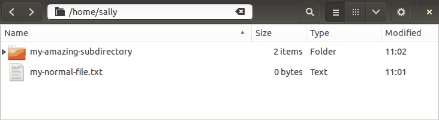
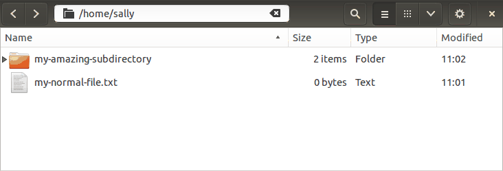
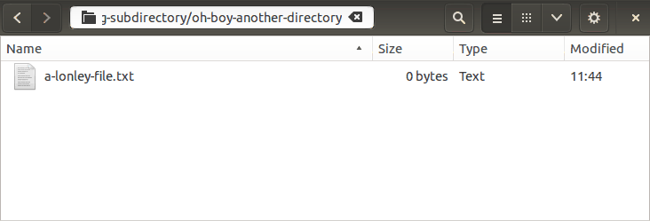

Part II - Getting Your Bearings
The File System
- Your terminal is always located "inside" some directory on the file system.
- Your current location influences how many commands are interpreted, so it's important to know where you are!
- In this section, we'll cover a few tools to learn our location and move around.
"Stacked papers in folder" by Lindsay Holmwood is licensed under CC BY 2.0.
The file system is defined by a hierarchy of "directories". A directory can contain any number of directories (known as "sub-directories"). For the most part, each directory is itself contained within exactly one directory; this is known as the "parent directory".
These concepts are likely familiar because they are also featured in many GUI applications like Windows Explorer and Apple's Finder. The sample commands in this section will be be supported by recordings of equivalent operations performed with a graphical interface (specifically, the GNOME Files file manager).
Path: /top-level/sub-directory/another directory!/
| | | |
--------------+---------+-------------+------------------+
| | | |
| | | |
Directories: top-level | |
sub-directory |
another directory!
On Unix-like systems, the forward slash character (/) separates directory
names. This means that the forward slash character cannot be used in a
directory name, but everything else is fair game.
The example above describes a path where top-level is a directory that
contains sub-directory. Inside sub-directory is a third directory named
and another! (yes: the name includes the space character and the exclamation
mark).
vm$
- On the command line, though, it's not always clear where we are.
- By the way: in this course, we'll use the dollar sign (
$) to indicate a command prompt. - This notation is commonly used in software documentation, but it is only convention; there is nothing special about the dollar sign.
- Importantly, you should not include it when you copy commands from the web
- In any case, there are a few essential tools for getting our bearings.
pwd
Print the current (i.e. "working") directory
vm$ pwd
/home/sally
vm$
In a GUI:
- The
pwdcommand writes the terminal's current directory to the screen. - This is an acronym for "print working directory"
- This information is so important that many people customize their command prompt to include it. We'll discuss customization later.
- In this example, we are in the "home directory" of the user named "sally". The home directory is a location reserved for your user account (new terminal windows typically start here).
ls
List directory contents
vm$ pwd
/home/sally
vm$ ls
my-amazing-subdirectory
my-normal-file.txt
vm$
In a GUI:

- The
lsutility lists the contents of a directory--this includes files and sub-directories - Without any arguments, it shows the content of the current directory
vm$ ls my-amazing-subdirectory
oh-boy-another-directory
just-another-file.txt
vm$
In a GUI:

When invoked with a path to another directory, ls will display the contents
of that directory.
cd
Change directories
vm$ cd my-amazing-subdirectory
vm$ pwd
/home/sally/my-amazing-subdirectory
vm$
In a GUI:

cdallows us to move around inside the directory structurecdstands for "change directory" and it accepts a path that is our destination- In this example, we're moving to a subdirectory named
my-amazing-subdirectory. The output ofpwdchanges to reflect this. - Any guesses for what happens when we try to
cdinto a file?
vm$ ls
oh-boy-another-directory
just-another-file.txt
vm$ cd just-another-file.txt
cd: just-another-file.txt: Not a directory
vm$ cd this-directory-doesnt-exist
cd: this-directory-doesnt-exist: No such file or directory
vm$
In a GUI:
Notice that we cannot move into a file or into a location that doesn't exist.
vm$ pwd
/home/sally
vm$ cd my-amazing-subdirectory/oh-boy-another-directory
vm$ pwd
/home/sally/my-amazing-subdirectory/oh-boy-another-directory
vm$
...and as discussed earlier, the forward slash character (/) separates
directory names.
Going $HOME
vm$ pwd
/home/sally/my-amazing-subdirectory/oh-boy-another-directory
vm$ cd ~
vm$ pwd
/home/sally
vm$ cd ~/my-amazing-subdirectory/oh-boy-another-directory
vm$ pwd
/home/sally/my-amazing-subdirectory/oh-boy-another-directory
vm$
The tilde character (~) is a shorthand for "my home directory." You don't
have to use it all by itself; it can be used as part of a path, too.
Backing up
"Stuck Car" by Michael Pereckas is licensed under CC BY-SA 2.0
We've learned how to dive into a directory, but we're kind of stuck once we get there. Fortunately, there is a consistent method for referencing "the parent directory."
vm$ pwd
/home/sally/my-amazing-subdirectory/oh-boy-another-directory
vm$ cd ..
vm$ pwd
/home/sally/my-amazing-subdirectory
vm$
In a GUI:

Two period characters (..) signify "the directory above."
vm$ pwd
/home/sally/my-amazing-subdirectory
vm$ cd ../../sally
vm$ pwd
/home/sally
vm$
This works just like any other directory name, so it can be used anywhere you can write a path.
vm$ pwd
/home/sally
vm$ cd ../..
vm$ pwd
/
vm$ cd ..
vm$ pwd
/
vm$
The hierarchy of files is sometimes referred to as a "tree" because of the way directories and sub-directories tend to "branch out" from the center. Continuing this metaphor, the top-most directory is commonly referred to as the root directory. We can't move any higher in the file system than the root.
Paths from the root? Absolutely!
"rooted-path" by Devlon Duthie is licensed under CC BY-NC 2.0.
Up until now, all the paths we've used have been based on the current working
directory. When our current working directory was /home, then cd sally
meant, "move to the directory named sally (inside of /home)." If we had
started in the /etc directory, then the same command cd sally would have
put us somewhere different: /etc/sally.
It's also possible to write paths that describe the same location regardless of our current working directory.
vm$ pwd
/home/sally
vm$ cd /home
vm$ pwd
/home
vm$ cd /home/sally/my-amazing-subdirectory
vm$ pwd
/home/sally/my-amazing-subdirectory
vm$
A paths which begins with a forward slash character (/) is known as an
"absolute path". It describes the same location regardless of where we are
when we use it.
tree
Display directories and their contents
vm$ tree
.
├── my-amazing-directory
│ └── just-another-file.txt
└── my-normal-file.txt
1 directory, 2 files
vm$
tree is a powerful tool for visualizing files, directories, and their
relationships. It uses a text-based "tree" diagram.
tree isn't included in all systems by default, so when you're working with a
system outside of this course, you may need to install it yourself
Inspecting files
"Not legal tender" by skycaptaintwo is licensed under CC BY-NC 2.0.
Directories are great for organization, but most of our work concerns files. Lets take a look at some tools for learning about files and their contents.
cat
Display file contents (all at once)
vm$ ls
oh-boy-another-directory
just-another-file.txt
vm$ cat just-another-file.txt
This is the first line of just-another-file.txt
This is the second line of the file!
The file only has three lines, and this is the last one!
vm$
- The
catutility has a lot of uses (its name is short for "concatenate"), but the simplest use is for displaying file contents. - One problem here is that all the content gets "dumped" to the screen. This
means
catisn't very useful for files with more than a few lines.
less
Display file contents (with navigation controls)
vm$ less a-longer-file.txt
This is the content of a-longer-file.txt, but only
just enough of it to fill the screen. You can use
the "up" and "down" arrow keys in the terminal to
scroll through the whole file. Press the `q` key
to quit.
The less utility provides a way to review the contents of a large file. It
has a lot of special controls, but the most important ones are:
- "Up" arrow key, "PageUp" key: scroll upwards
- "Down" arrow key, "PageDown" key: scroll downwards
hkey: helpqkey: exit
sort
Re-order input
vm$ cat just-another-file.txt
This is the first line of just-another-file.txt
This is the second line of the file!
The file only has three lines, and this is the last one!
vm$ sort just-another-file.txt
The file only has three lines, and this is the last one!
This is the first line of just-another-file.txt
This is the second line of the file!
vm$
As you might expect from the name, the sort utility sorts its input by line
and displays the result.
In Review
-
Paths
- The forward slash character (
/) is the path separator - Two periods (
..) denote "the parent directory" - The "root" directory is the topmost directory on the file system; it's
name is simply
/ - The tilde character (
~) denotes "my home directory"
- The forward slash character (
-
Utilities
pwd- display the current directory ("print working directory")cd- navigate to another directory ("change directory")ls- list contentscat- display file contents ("concatenate")less- display file contents with controlssort- re-order the lines of a file and display the resultstree- display files within a directory and its children in a visual manner
Exercise
Yar! There be treasure in these parts, and now's the time to grab it!
I see ya eyeing me wooden leg. You're right, I can't do this on me own. But lest ye be gettin' any ideas about taking off with that treasure yourself, remember I've got yer precious pet snail waiting in the galley. If I don't hear word from you by midnight, I'll be feasting on escargot. Well it's just the one animal, so not much of a feast, I suppose. It'll be mostly coconuts, like always. Listen, what I'm trying to say is I'm going to eat your snail, okay? So make it quick!
Follow the instructions in Chapter 3 - Using Vagrant to get set up, then once you've
connected with vagrant ssh, you'll find a directory named island in your
"home" directory. Within that directory is a file named turtle.txt. Use cat
to read the contents and get your next step.
Solution
-
Use
cdto move into theislanddirectory.vm$ cd islandNext, use
catto read the contents ofturtle.txt(to "talk" with the turtle):vm$ cat turtle.txt -
The steps through the footpath are just directory names. Use
cdto move through them:vm$ cd footpath/right/straight/left/rightThere is apparently a "sign" in this directory; we can "see" it using
ls:vm$ ls left right sign.txt straight vm$The file is named
sign.txt. Usecatto read it:vm$ cat sign.txt -
In this context, we'll interpret "go back," to mean "move to the parent directory." We'll use
..to express this. We have to do that twice, then travel into twostraightdirectories:vm$ cd ../../straight/straight...and then read the
sign.txtfile there:vm$ cat sign.txt -
We'll "go to" the
$MAGIC_PORTALusingcd:vm$ cd $MAGIC_PORTAL -
We're out of instructions, so we'll use
lsto "look around":vm$ lsThis reveals a file named
sand.txt. Once again,catwill display its contents:vm$ cat sand.txt -
We can find the current directory using the
pwdutilityvm$ pwdRemember that the "forward slash" character (
/) is the path separator, so we should note every digit that follows that character (and ignore the rest). We'll usecdto move to the appropriate sub-directory of the/home/vagrant/island/cavedirectory. -
We can "speak" to the cave dweller by reading the contents of the
cave-dwellerfile:vm$ cat cave-dweller -
After moving to the forest:
vm$ cd ../../forestWe can inspect the contents with
ls:vm$ lsSure enough, there is a file named
inventory. Usecatto read the contents:vm$ cat inventoryWe could find the last item by comparing them all ourselves, but we know that the
sorttool will display a file's contents in sorted order:vm$ sort inventoryThe last item in that output is our next step.
-
We'll use
catto read the contents of the item from the previous step. It looks like we need to find a file inside one of the "tree" directories. There's a lot of sub-directories there, and searching them one-by-one could take a long time. We should usetreeto get a visual overview of the whole "forest" directory:vm$ treeNow it's clear where that file is. Based on the contents, this is the file we've been searching for, so we're done!